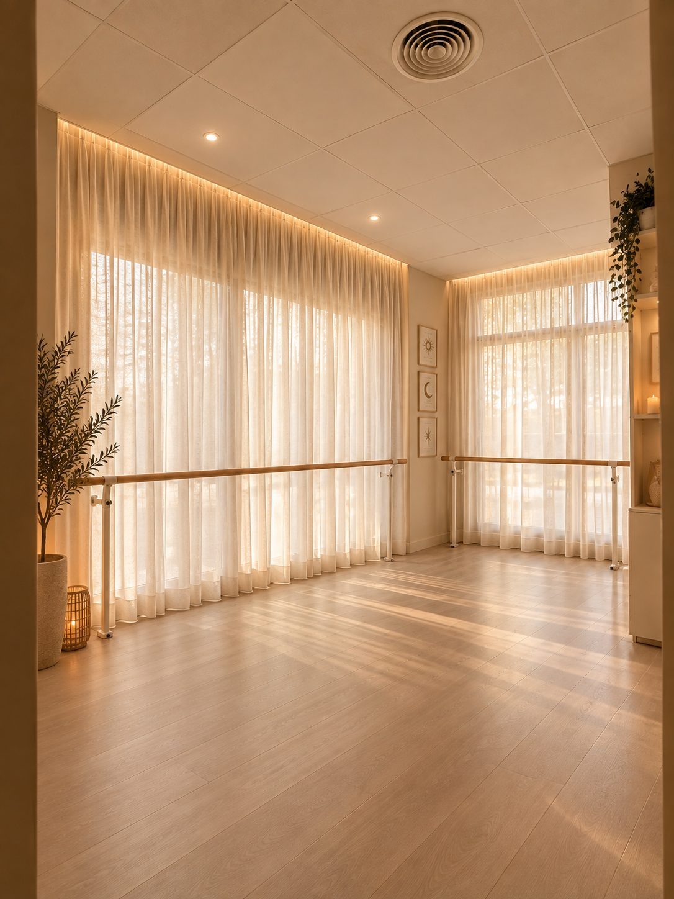

Sant Cugat del Vallès – Barcelona
Un espacio para
volver
a ti.
Barre, Pilates y yoga con algo más: astrología, tarot, meditación y journaling para cuidar tu cuerpo, escuchar tu mundo interior y encontrar tu propio ritmo.

Aquí ninguna clase es simplemente una clase.
Algunas sesiones se centran en el entrenamiento; otras incorporan astrología, tarot, meditación o journaling. Todas comparten un propósito: moverte, reconectar y encontrar tu equilibrio.
Movimiento esencial
La base: fuerza, control y movilidad.
BarreFuerza, elegancia y movimiento.
Una clase dinámica que combina elementos del ballet, el Pilates y el entrenamiento funcional para trabajar la fuerza, la resistencia muscular, el equilibrio y la coordinación.
A través de movimientos controlados, repeticiones pequeñas y secuencias fluidas en la barra y en la esterilla, activarás todo el cuerpo, especialmente piernas, glúteos y abdomen.
Una práctica retadora y divertida en la que la precisión y la constancia son las protagonistas. No necesitas experiencia previa en ballet: solo ganas de moverte y disfrutar.
Pequeños movimientos. Grandes cambios.
Pilates MatConecta con tu cuerpo. Fortalece desde dentro.
Una práctica consciente que combina fuerza, control, estabilidad y movilidad para ayudarte a construir una relación más fuerte y equilibrada con tu cuerpo.
A través de ejercicios sobre la esterilla, trabajarás la musculatura profunda, el abdomen, la postura y la coordinación, prestando atención a la respiración y a la calidad de cada movimiento.
Una clase para ganar fuerza y estabilidad, mejorar tu postura y sentirte más conectada contigo misma, respetando tu propio ritmo.
Tu cuerpo es tu hogar. Aprende a habitarlo.
YogaEncuentra el equilibrio entre movimiento y quietud.
Una práctica que conecta cuerpo, respiración y mente a través de posturas, transiciones conscientes y momentos de atención plena.
Durante la sesión trabajaremos movilidad, equilibrio, flexibilidad y fuerza, adaptando la práctica al ritmo y las necesidades del grupo. La respiración nos ayudará a mantener la presencia en cada movimiento y a crear un espacio para desconectar del exterior.
Según el estilo de la sesión, la práctica podrá ser más dinámica y fluida o más pausada y restaurativa.
Inhala presencia. Exhala lo que ya no necesitas.
Experiencias Mystika
Movimiento con intención. Formato Barre o Pilates según el horario.
Astro BarreMuévete con intención. Conecta con tu energía.
Astro Barre une la intensidad y precisión del barre con la inspiración de la astrología para crear una experiencia que va más allá del entrenamiento convencional.
Comenzaremos activando el cuerpo con una secuencia de barre diseñada para trabajar fuerza, resistencia y control. La clase estará acompañada de una temática astrológica que nos servirá como hilo conductor para conectar el movimiento con nuestro momento vital.
Según la sesión, exploraremos un signo, una energía planetaria, una fase lunar o un tema de autoconocimiento, a través de pequeñas reflexiones y propuestas para llevar esa intención a tu día a día.
El movimiento también puede ser una forma de escucharte.
Mystic FlowUna clase. Una carta. Un mensaje para ti.
Mystic Flow es una experiencia que combina movimiento consciente, conexión interior y el simbolismo del tarot.
A través de una práctica de movimiento, crearemos un espacio para soltar las tensiones del día, volver al cuerpo y escuchar cómo nos sentimos. Al finalizar, tendrás la oportunidad de elegir intuitivamente una carta y descubrir el mensaje que la acompaña.
Cada carta estará vinculada a una reflexión personal y a una pregunta para tu journal, para que puedas llevarte algo más que la sensación de haber entrenado: un pequeño espacio para observarte y conectar contigo.
No se trata de encontrar todas las respuestas, sino de hacerte las preguntas adecuadas.
Lunar FlowHonra tus ciclos. Muévete a tu ritmo.
Una práctica de movimiento consciente inspirada en los ciclos de la Luna y en la conexión con nuestro mundo interior.
A través de secuencias de movimiento, exploraremos una forma de entrenar más conectada con nuestras sensaciones y necesidades. Cada sesión podrá inspirarse en una fase lunar o en una temática relacionada con los ciclos, la intuición, los nuevos comienzos o el proceso de soltar.
La experiencia se completará con una intención o reflexión que te acompañará más allá de la esterilla.
No tienes que estar siempre en tu máximo esplendor. También necesitas espacio para recogerte.
Slow MoonBaja el ritmo. Respira. Vuelve a ti.
Un espacio para desacelerar y regalarte un momento de calma en medio de la rutina.
Slow Moon combina movimientos suaves, estiramientos, movilidad, respiración consciente y relajación para liberar tensiones y cultivar una conexión más amable con el cuerpo.
La práctica se desarrolla sin prisas, respetando las sensaciones de cada persona y dejando espacio para la pausa y la presencia. Puede incorporar momentos de meditación, pequeñas reflexiones o propuestas de journaling inspiradas en la temática de la sesión.
No todo crecimiento necesita prisa.
Solar HeatActiva tu fuerza. Enciende tu energía.
Una experiencia dinámica inspirada en la energía del Sol, la vitalidad y la confianza en una misma.
A través de una práctica de movimiento más enérgica, trabajarás la fuerza, la resistencia muscular y el control corporal. La intensidad de la sesión te permitirá desafiarte, salir de la inercia y conectar con tu energía desde el movimiento.
Solar Heat representa la acción, la determinación y la capacidad de ocupar tu propio espacio. Una experiencia para terminar la clase sintiéndote fuerte, activa y presente.
Ocupa tu espacio. Confía en tu fuerza. Brilla a tu manera.
Más allá de la esterilla
El bienestar también ocurre aquí.
Talleres, rituales y retiros para crear momentos de pausa, reflexión y conexión.
Astrología
Conocer el cielo para conocerte un poco más.
Tarot
Espacios para escuchar el mensaje de las cartas.
Journaling
Preguntas, escritura y claridad interior.
Retiros
Experiencias para desconectar de fuera y volver a ti.
Universo Mystika
Si esto resuena contigo, quédate cerca.
Suscríbete a nuestra newsletter y recibe en tu correo lo que se mueve en el cielo y en el estudio.
Tránsitos del mes
Qué energía trae cada mes y cómo llevarla a tu práctica y a tu día a día.
Lunas y eclipses
Fases lunares, eclipses y pequeños rituales para acompañarlos.
Eventos antes que nadie
Talleres, retiros y clases especiales, para que reserves tu plaza primero.
Ya formas parte.
Revisa tu correo: te hemos enviado un mensaje para confirmar tu suscripción.

Sobre Mer
Esto no es solo un estudio.
Es mi historia.
Durante mucho tiempo hice lo que se suponía que tenía que hacer. Hasta que llegó un momento en el que dejé de reconocerme en esa vida.
Volver al cuerpo, escucharme y construir una vida más alineada conmigo cambió mi manera de entender el bienestar.
Mystika nace de ese proceso y de las ganas de crear un espacio donde otras mujeres también puedan parar, conectar y encontrar su propio ritmo.
Mer
El espacio
Un pequeño refugio en Sant Cugat.
Un estudio pensado para moverte, respirar, parar y sentirte en casa.
Cómo llegarFormas de vivir Mystika
Elige tu ritmo.
Una propuesta flexible para que encuentres la frecuencia que mejor encaja contigo.
2 prácticas / semana
Para integrar el movimiento en tu rutina y disfrutar de la experiencia Mystika.
Talleres, eventos y retiros se reservan aparte.
Horarios y reservas
Tu práctica, tu ritmo.
Consulta la programación de la semana y reserva tu plaza.
Preguntas frecuentes
Antes de tu primera clase.
¿Necesito experiencia previa?
No. Cada clase se adapta a tu nivel y siempre tendrás opciones para hacer cada ejercicio más suave o más intenso. Si es tu primera vez, Barre o Pilates Mat son un buen punto de partida.
¿Mystika es un estudio de Pilates?
Es un estudio de movimiento: barre, Pilates y yoga. Algunas clases añaden astrología, tarot, meditación o journaling, pero el movimiento siempre está en el centro.
¿Qué hace diferentes las clases?
Cada experiencia tiene su propia intención. En unas el foco es entrenar; en otras, la práctica se acompaña de una fase lunar, un tema astrológico o una carta de tarot con una pregunta para tu journal.
¿Cómo sé si una clase es Barre o Pilates?
Mystic Flow, Lunar Flow, Slow Moon y Solar Heat pueden ser en formato Barre o Pilates. La modalidad de cada sesión aparece en el horario de reservas.
¿Qué tengo que traer?
Ropa cómoda, una botella de agua y una toalla. Del resto nos encargamos nosotras.